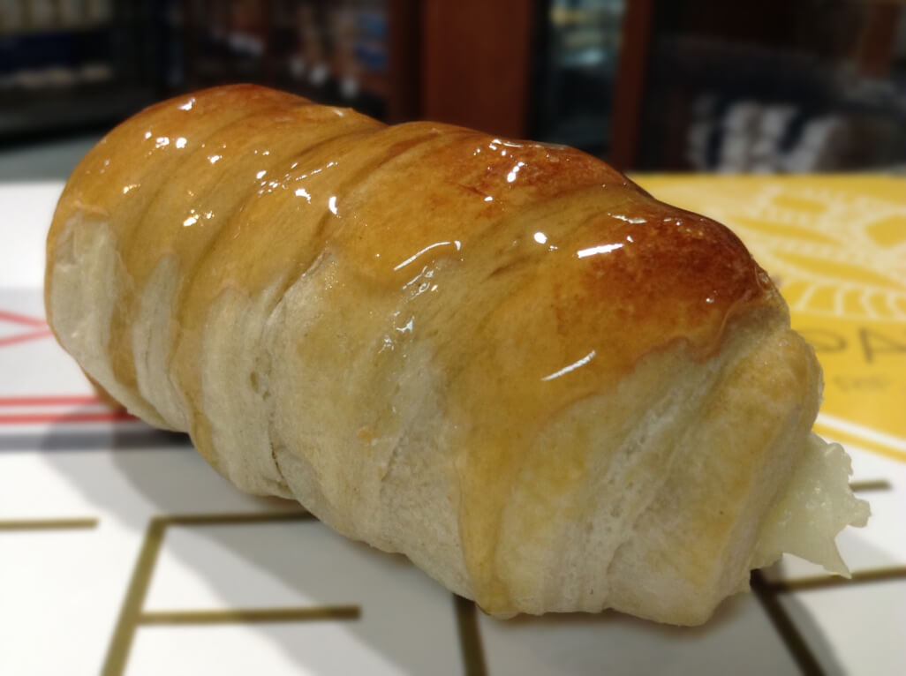

-

-

-

- 
Visítanos
LUNES A DOMINGO: 06:30AM A 08:50PM
Muy Pronto
Sitio en construcción
Sitio en construcción
0501-7273678
¿Necesitas empleo?
Prolongación Avenida Salvador Feo La Cruz, C.C Paseo La Granja, PB 1-2, Municipio Naguanagua, Estado Carabobo. Venezuela